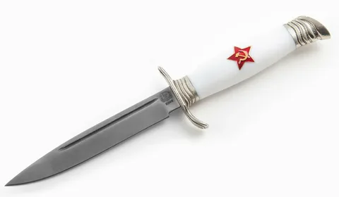

Почему выбирают нас?
Мы предлагаем ножи с лучшими характеристиками. Наш ассортимент включает в себя не только устаревшие модели, но и новейшие разработки в мире ножей.
В нашем магазине вы найдете лучшие ножи от мировых производителей. Мы всегда стараемся предложить вам высокое качество по доступным ценам.
| Модель | Цена | Рейтинг товара |
|---|---|---|
| Финка НКВД | 5000 руб | 4.7 |
| Охотничий нож | 3500 руб | 4.5 |
| Кухонный нож | 1200 руб | 4.9 |
Мы предлагаем ножи с лучшими характеристиками. Наш ассортимент включает в себя не только устаревшие модели, но и новейшие разработки в мире ножей.
+----+
/ # | # +--> тут
/ # | # /
+-----+